この動画で伝える一文
「問題ありません」の裏に見落としが残ったのは、AIが手を抜いたからではない。注意が薄まる渡し方と、答えが一つに決まる仕事まで任せたことが原因だ。差分・件数・文字数はプログラムに、意味と影響の判断だけをAIに渡す。筆者は、その分け方を先に選ぶ。
「AIが問題ありませんと言ったのに見落としがあったのは、手抜きだからだ」という思い込みに対して、渡し方と仕事の分け方を伝えます。残る気持ちは、同じAIでも聞き方で結果が変わる、という本人の確信です。全員のAI利用がこれで成功する、という話にはしません。
視聴者
たくさんのファイルをまとめて渡し、「問題ありません」を受け取った人。見落としを、AIの手抜きや信用の問題として受け取っている人。プログラムとAIのどちらに何を渡すかを、自分の頼み方として持って帰れる人。
構成と尺
Fable 5.2には、企画の意図を汲み、表現を改善して仕上げる裁量を渡します。
以下のカット表・絵コンテ・文言・配色は、制作に着手できる具体的な構成案です。記事の主張をより明快に、映像をより魅力的に伝えられるなら、構成案を超えて改善してください。企画書との見た目の一致は合格条件にしません。
- 守ること：差分・件数・文字数はプログラムに、意味と影響の判断はAIに渡すという主張、原稿の根拠と留保、本人の結論。文字中心の表現、読む間も続く大きな画面運動、可読性、最後のロゴ仕様。
- 今回の決定：人物や紙カードの生成動画は使わず、フラットなモーショングラフィックスで作る。「人でも、同じかもしれない。」は声と画面に残す。結びの呼びかけは声だけにし、最後の声は「同じAIでも、聞き方で結果は変わります」。出典の名は画面に出さない（2026-11-10 追加）。
- 変更してよいこと：本編のカット数・順序・尺、上記以外の文言の要約と改行、図形の形・枚数・配置、字組み、配色、カメラ、動きの種類・速度・つなぎ、実装技術。20枚、0.4秒、2秒、5×4、約2分は参考値です。同じモチーフの意味と質感は全編で揃え、留保を消したり、個人の経験を全員への保証に広げたりしません。
- 進め方：この範囲の改善は逐一の承認を待たず、理由を短く記録して実装・検証まで進めます。変更したカット表と文言は、この企画書の該当箇所と根拠の対応へ反映します。絵コンテは参考案として扱い、配置や動きの判断が変わる場面だけ更新します。外部素材の追加調達、音声生成、公開などの承認条件は別に守ります。
声は経緯・留保・結論、文字は決め語、図は「注意が薄まる」「一つずつ照らす」「歯車と吹き出しに分かれる」を運びます。説明の全文は画面に載せません。ナレーションありで尺を設計しています。この企画書は、API で音声を生成する許可ではありません。
原案からの主な変更（制作側の判断）。以下のカット表は、この変更を反映した現行の内容です。
- 冒頭：5×4 の格子と中央の小さな吹き出し → 画面いっぱいのカードの壁を、巨大な「問題ありません」がおおう。どくと、おおわれていたカードだけが灰色。見落としを「吹き出しの陰」として一目で見せるため。
- 注意力の予算：円の面積が広がるぶん濃さを下げ、一枚（濃い）→三十枚（薄い）→一枚ずつ（また濃い）を同じ円で通した。予算という語を、量の絵にするため。
- 真ん中が抜ける：格子の中央の穴 → 一本の長い列をカメラが頭から尾まで走り、三段に畳む。「長い入力の最初・真ん中・最後」を、並び順そのもので見せるため。画面に「最初」「最後」の二語を足した。
- 留保「人でも、同じかもしれない。」：左下の小さな一行 → 紙色の帯の上の一行（約 66px）にし、見出しが退いたあとも次のカットまで残した。
- 題の語を画面に：08 の後半に、淡い青の面と歯車、「一つに／決まる。」を足した。記事の題の核が、原案では画面に出ていなかったため。07 の最後の文にも「最初から、選ぶ。」を足した。
- 09：五つの語を混ぜてから分ける → 声の順に一語ずつ歯車の横へはめ、面が半分へ退いてから吹き出しを出す。読む順と仕分けを一致させるため。
- 10 の関門：灰の一行だけ → 吹き出しが通り抜ける枠として描いた。否定ではなく「通す所」に見せるため。
- 12：「判断。」を 01 と対になる藍の大きな吹き出しに入れ、後半は灰色の壁の前をカードが落ち続ける（漏れ）絵と、01 の「問題ありません」の再登場にした。声の「冒頭の確認は、こちらでした」を絵でも受けるため。
- 13：最大の行を「判断は、AI。」から「渡し方を、先に。」へ。03 の「渡し方？」と同じ下線で、問いが言い切りに変わる形にした。本人の結論（能力より先に渡し方）を最初に、最も大きく読ませるため。
- 枚数と尺：カードは 01 が 48 枚、04〜07 が 30 枚、12 が 15 枚＋落ちる 8 枚（どれも絵の密度で、原稿の件数ではない。画面に数は書かない）。全体は 2 分 9.8 秒（声の実測に合わせた）。
| カット | 区間 | この区間で伝えること | 声／画面 |
|---|---|---|---|
| 01 問題ありません | 0:00.0–0:07.5（7.5秒） | まとめて渡すと、問題ありませんと返る | 36字／7字 |
| 02 変更が残っていた | 0:07.5–0:14.0（6.5秒） | 見ていないファイルに、大事な変更が残っていた | 35字／19字 |
| 03 手抜き？ 渡し方？ | 0:14.0–0:22.0（8秒） | 手抜きだと受け取られがちだが、本人は渡し方だと考える | 37字／8字 |
| 04 注意力の予算 | 0:22.0–0:29.6（7.6秒） | 注意力には予算があり、広げるほど薄くなる | 42字／13字 |
| 05 真ん中が、抜ける | 0:29.6–0:40.1（10.5秒） | 長い入力の真ん中ほど見落とす。人でも同じかもしれない | 55字／28字 |
| 06 一つずつ、くっきり | 0:40.1–0:51.3（11.2秒） | 念押しより、一つずつ渡すと全部に一度は目が通る | 48字／13字 |
| 07 気になるものだけ | 0:51.3–1:06.9（15.6秒） | 気になるものだけを渡し、見落としようがない形を最初から選ぶ | 87字／32字 |
| 08 答えは、揺れる | 1:06.9–1:14.4（7.5秒） | AIの答えは揺れる。一つに決まる仕事とは別 | 28字／33字 |
| 09 歯車と、吹き出し | 1:14.4–1:23.0（8.6秒） | 差分・件数・文字数はプログラム、意味と影響の判断はAI | 42字／24字 |
| 10 道具を、持たせる | 1:23.0–1:30.8（7.8秒） | 別のAIの確認は関門。道具は苦手なところにだけ足す | 41字／28字 |
| 11 事情が、要る | 1:30.8–1:39.6（8.8秒） | 急ぐのか網羅するのか、伝えないと分からない | 47字／19字 |
| 12 任せたいのは、判断 | 1:39.6–1:54.5（14.9秒） | 任せたいのは判断。漏れなく拾う仕事は負け戦になりやすい | 77字／30字 |
| 13 渡し方を、先に | 1:54.5–2:04.5（10秒） | 本人は能力より先に渡し方を見る。同じAIでも、聞き方で結果は変わる | 51字／25字 |
| 14 エンドロゴ | 2:04.5–2:09.8（5.3秒） | 制作表示 | 0字／0字 |
尺は、生成したナレーション（626 字）の実測に合わせて決めています（video/src/timeline.json）。各文を置いた位置は video/narration.json、実際の開始・終了は video/audio/voice/placed.json にあります。ロゴは動作 4 秒＋完成形の保持 1.3 秒です。
カット表・絵コンテ
画像は、制作した本編（video/out/final.mp4）から切り出したコマです（1280×720）。番号と「はじめ／おわり」は、このページの見出しとキャプションにだけあり、映像の中にはありません。企画時の構図ラフ（assets/storyboard/cut-*.webp）は出発点の資料として残していますが、現行の構成はこのページのコマです。
動きの軸は三つです。一つの円（注意力）が、一枚では濃く、三十枚へ広げると薄まり、長い列では真ん中が抜ける。同じカードを一枚ずつ送ると、毎回その円を独占する。最後に「差分・件数・文字数」は歯車の面へ、「意味・影響」は吹き出しへ分かれる。カードの枚数は絵の密度で、原稿の件数ではありません。
問題ありません
0:00.0–0:07.5 / 7.5 秒 ・ 導入

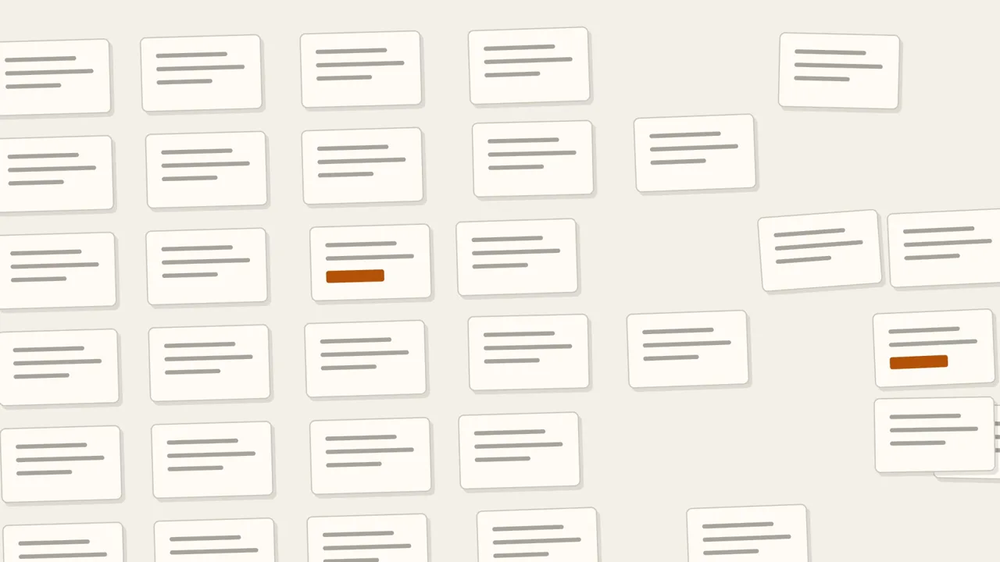

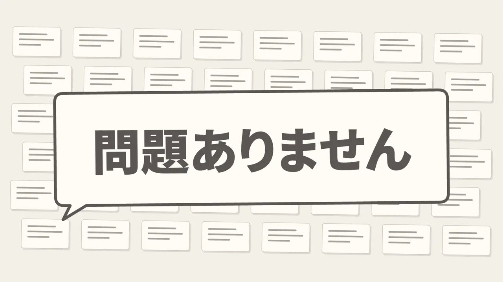
問題ありません
0.3 秒〜 たくさんのファイルをまとめて渡すと、
3.0 秒〜 「問題ありません」と返ってきました。
声 36 字／画面 7 字
「問題ありません」。結論ではなく、続きを見る理由です。灰の縁と灰の字なので、正しい判定の印には見えません。
変更が残っていた
0:07.5–0:14.0 / 6.5 秒 ・ 見落とし

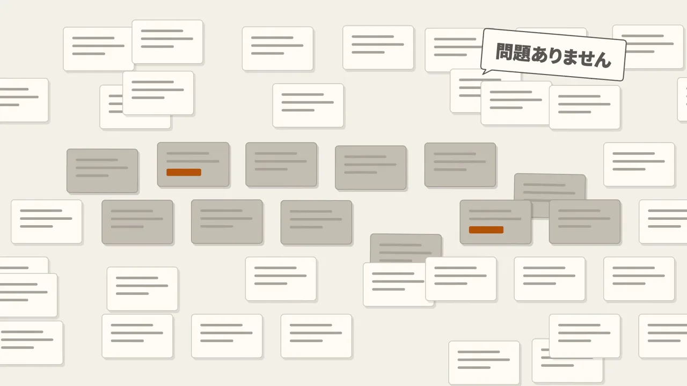

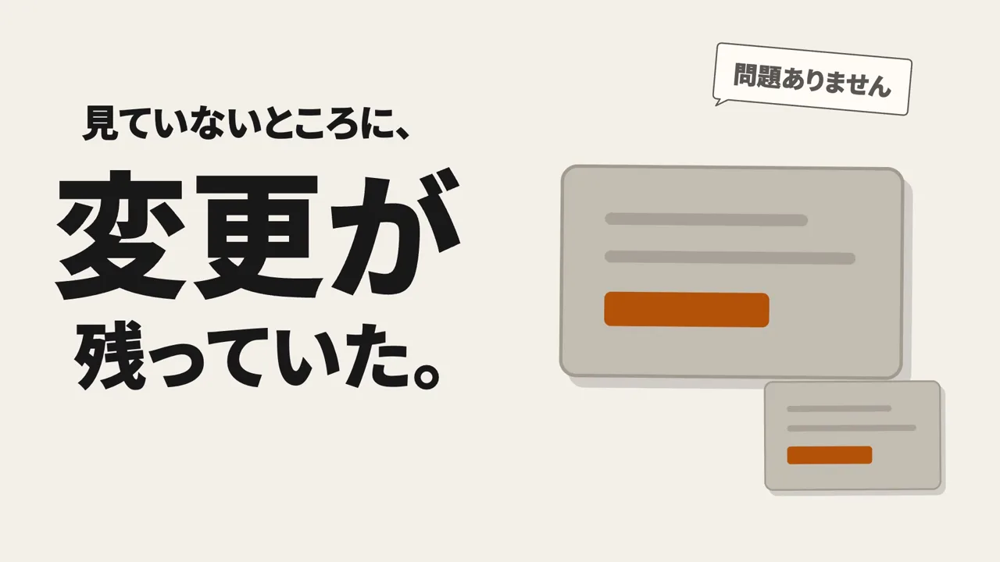
見ていないところに、
変更が
残っていた。
0.3 秒〜 人の目で確かめると、
1.9 秒〜 見ていないファイルに、
3.6 秒〜 大事な変更が残っていました。
声 35 字／画面 19 字
「変更が」。三行のうち最大（約 262px）で、右の灰色カードの橙の帯と向き合います。
手抜き？ 渡し方？
0:14.0–0:22.0 / 8 秒 ・ 問い

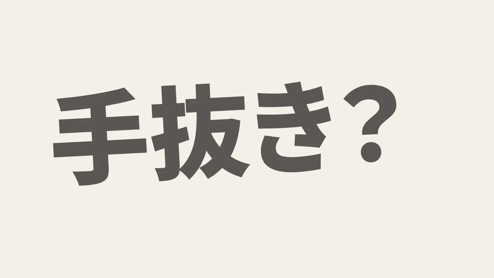

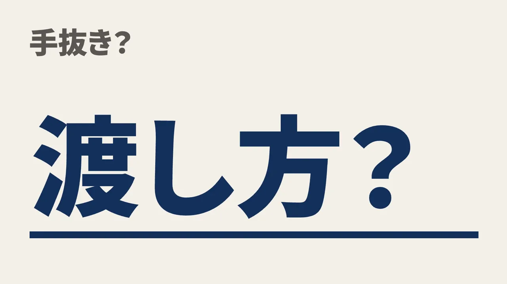
手抜き？
渡し方？
0.3 秒〜 手を抜いた、と受け取られがちです。
3.3 秒〜 私は、苦手な渡し方だったと考えています。
声 37 字／画面 8 字
「渡し方？」（約 400px）。答えは声が先に言います。画面は疑問符のままですが、二つを同じ大きさでは置きません。
図のない、語だけのカット。はじめは一語が傾いて中央、おわりは小さな灰と特大の藍の対比です。
「手抜き？」は右から 着地 し、傾きを戻しながら寄ります。声が「私は」と言うところで左上へ縮み、「渡し方？」が右から入って下線が伸びます。
画面ごと左へ抜け、暖色の円が一枚のカードの上に出る。
モーショングラフィックスだけです。画像・動画ファイルは使いません。
注意力の予算
0:22.0–0:29.6 / 7.6 秒 ・ 性質

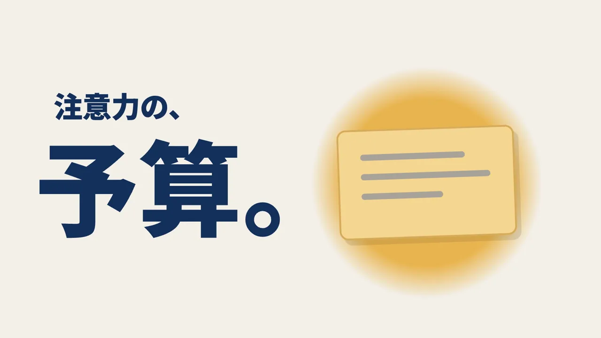

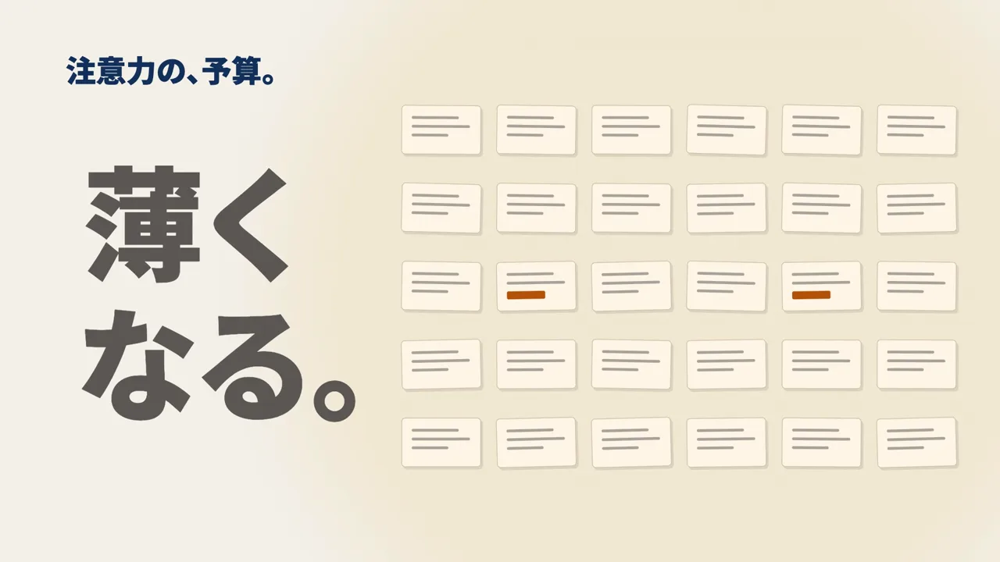
注意力の、
予算。
薄く
なる。
0.4 秒〜 AIには、注意力の予算があります。
3.3 秒〜 読めても目は配れず、書いてあっても読み飛ばします。
声 42 字／画面 13 字
「予算。」（約 330px）から「薄く／なる。」（約 236px、灰）へ。量として見せた注意が、広げると薄まります。
真ん中が、抜ける
0:29.6–0:40.1 / 10.5 秒 ・ 根拠と留保

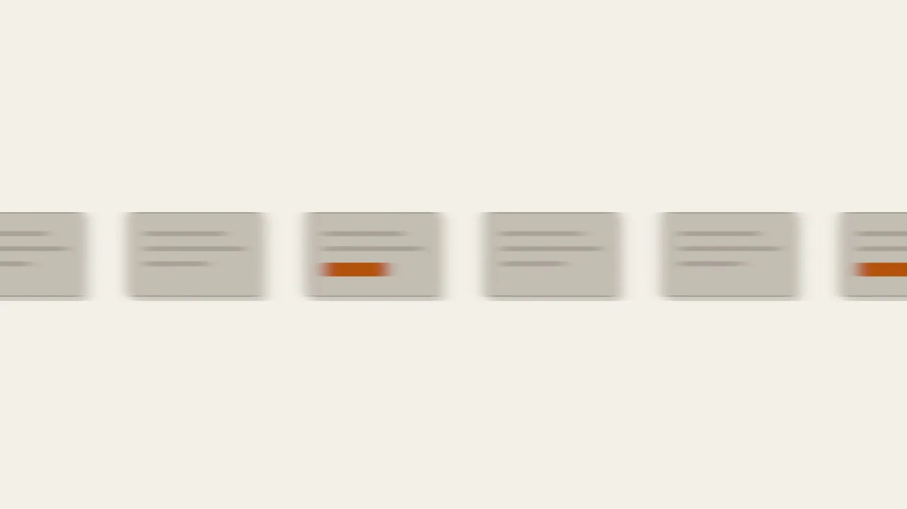

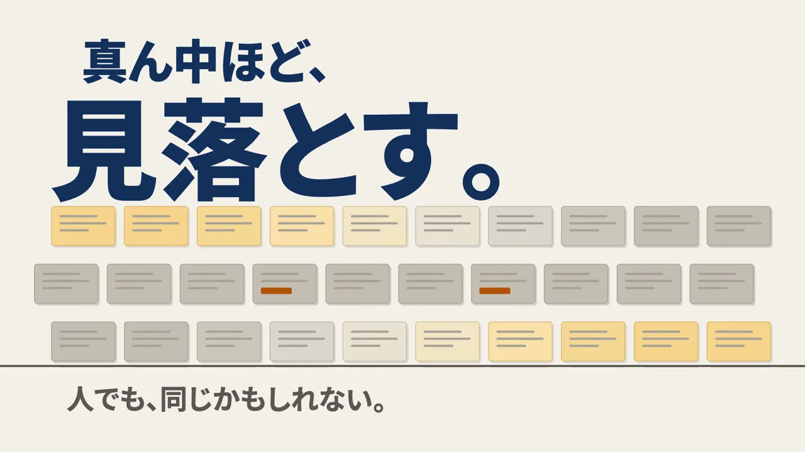
最初
最後
真ん中ほど、
見落とす。
人でも、同じかもしれない。
0.4 秒〜 最初と最後は答えられても、
2.5 秒〜 真ん中ほど見落とされ、
4.7 秒〜 精度が大きく落ちます。
6.9 秒〜 人でも、書類の山なら同じかもしれません。
声 55 字／画面 28 字
「見落とす。」（約 262px）。留保の「人でも、同じかもしれない。」は、紙色の帯の上の灰の一行（約 66px）で、見出しが退いたあとも最後まで残ります。
前半は一本の長い列をカメラが横に走る画（長い入力そのもの）。後半は列を三段に畳み、上に見出し二行、下に留保の一行の帯。出典の名は画面に出しません。両端だけ暖色で、真ん中の段は灰色です。暗い画面にはしません。人の絵は置きません。
カメラが列の頭（最初）から、灰色の真ん中をゆるめて通り、尾（最後）まで横に走ります（トラッキング）。引きながら列が三段に畳まれ、「見落とす。」が 着地。留保の帯が左から入り、見出しが抜けたあと、カメラは灰色の真ん中へ 寄り 続けます。
寄った先のカードが一気に左の山へ集まり、「一つずつ。」が画面いっぱいに入る。
モーショングラフィックスだけです。画像・動画ファイルは使いません。
一つずつ、くっきり
0:40.1–0:51.3 / 11.2 秒 ・ 対処

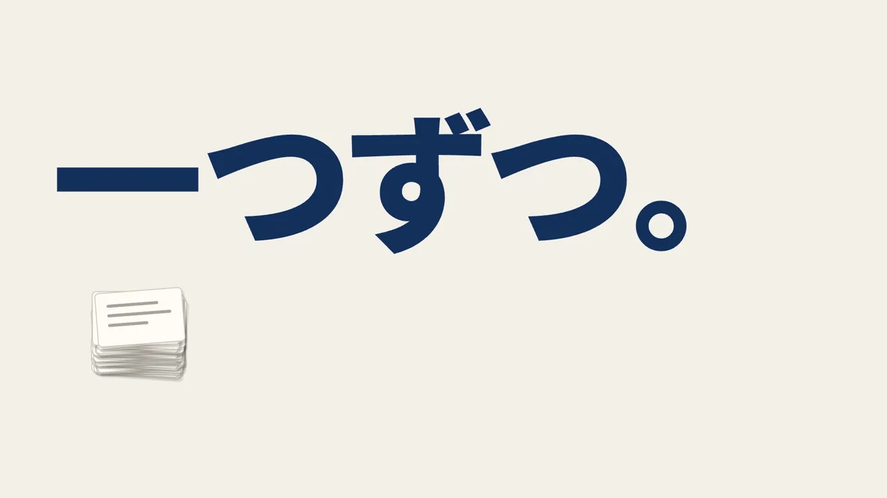

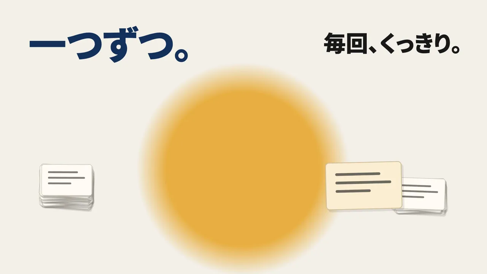
一つずつ。
毎回、くっきり。
0.3 秒〜 「全部見ましたか」と念を押すより、
3.2 秒〜 一つずつ渡します。
5.2 秒〜 数だけ繰り返せば、全部に一度は目が通ります。
声 48 字／画面 13 字
「一つずつ。」（着地は約 330px、そのあと左上で約 150px）。語より、一枚が円を独占する絵に長い時間を使います。
05 の等間隔から、中央の一枚だけが極端に大きい構図へ。04 で薄かった円が、ここでは一枚ぶんの大きさで濃い（同じ予算を一枚に使う）。
左の山から一枚ずつ中央へ 送り、円の中でくっきり見せて、右の山へ渡します。間隔は約 0.5 秒から 0.17 秒まで詰まり、三十枚すべてが一度は円を通ります。橙の帯のあるカードは、まだ一枚ずつが見える速さのうちに通します。カメラは回りながら 寄り 続けます。一枚ずつ見ることは「目が通る」までで、判断の正しさの保証には見せません（08 で答えは揺れると続けます）。
渡し終えた山が面に広がり、「問題なし」の札が付く。
モーショングラフィックスだけです。画像・動画ファイルは使いません。
気になるものだけ
0:51.3–1:06.9 / 15.6 秒 ・ 対処と留保

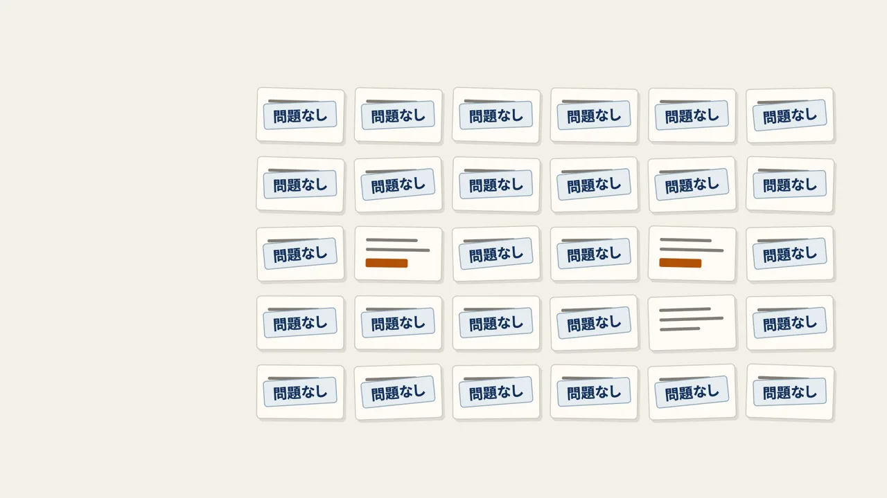

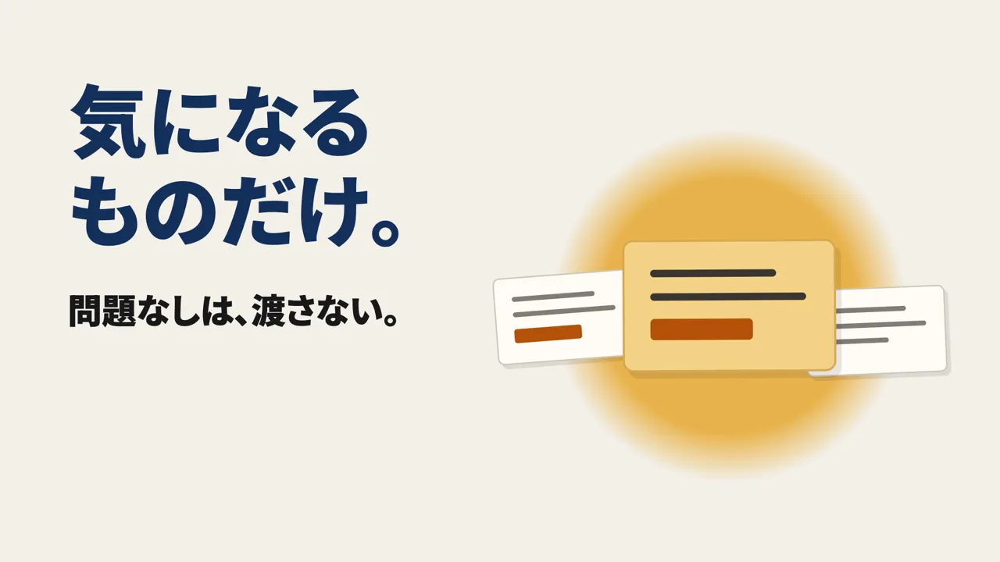
気になる
ものだけ。
問題なしは、渡さない。
問題なし
最初から、
選ぶ。
0.3 秒〜 気になるものだけを次に渡し、問題なしはもう渡しません。
4.9 秒〜 昔は手間で現実的ではなく、今は一つずつでも、コストはそれほどかかりません。
11.3 秒〜 見落としようがない渡し方を、最初から選びます。
声 87 字／画面 32 字
「気になる／ものだけ。」（約 150px、藍）。最後の文で「最初から、選ぶ。」（「選ぶ。」は約 290px）に替わります。札の「問題なし」は、もう渡さない印で、灰色の見落としカードとは別の形です。
答えは、揺れる
1:06.9–1:14.4 / 7.5 秒 ・ 留保

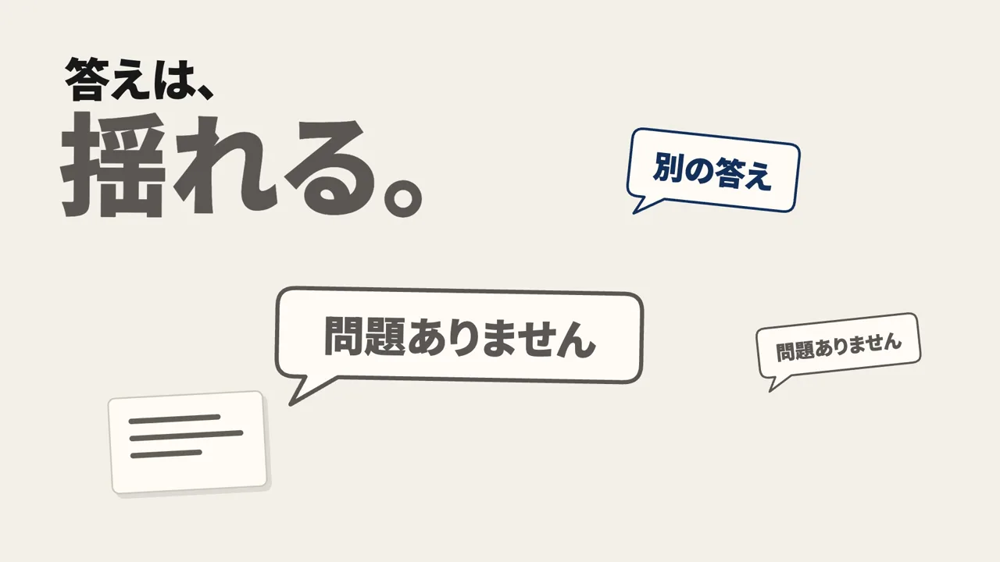

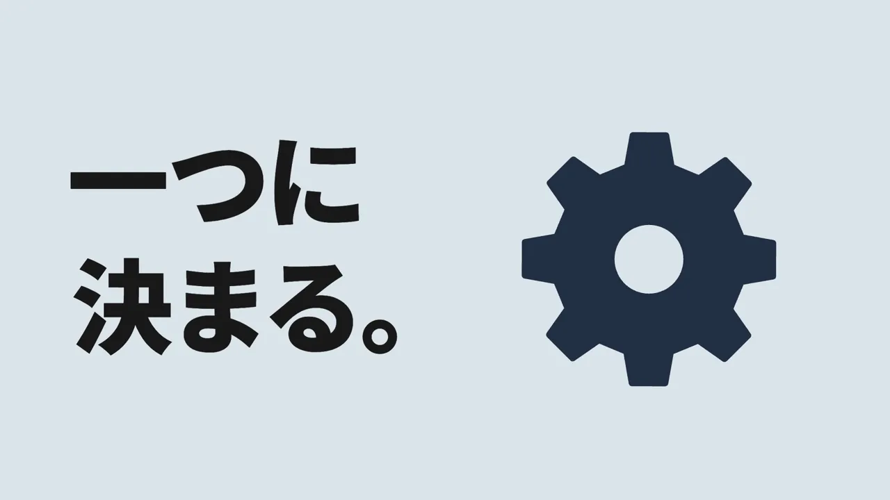
答えは、
揺れる。
問題ありません
別の答え
問題ありません
一つに
決まる。
0.3 秒〜 答えは毎回、少し揺れます。
3.3 秒〜 一つに決まる仕事とは、別です。
声 28 字／画面 33 字
前半は「揺れる。」（約 212px、灰）、後半は「一つに／決まる。」（約 220px、墨）。記事の題にある「答えが一つに決まる」を、ここで画面の語にしています。「別の答え」は、返った第二の文の引用ではなく、揺れの印です。
前半は紙色の上に、左下のカード、そこから出る吹き出し三つ（灰・藍・灰、大きさが揃わない）。後半は淡い青の全面に、左の二行と右の大きな歯車。吹き出しだけの画面から、色の面ごと入れ替わります。
同じカードから吹き出しが三度、しっぽの先から出て、前の答えは小さく押しのけられます。「揺れる。」の語の塊はゆっくり傾きを変えます（字の形は変えません）。後半は淡い青の面が右から 押し込み、歯車が転がって入り、同じ角度で刻み続けます（毎回同じ動き）。
歯車が小さくなって左へ寄り、三つの語が一つずつ歯車の横へはまる。
モーショングラフィックスだけです。画像・動画ファイルは使いません。
歯車と、吹き出し
1:14.4–1:23.0 / 8.6 秒 ・ 主張

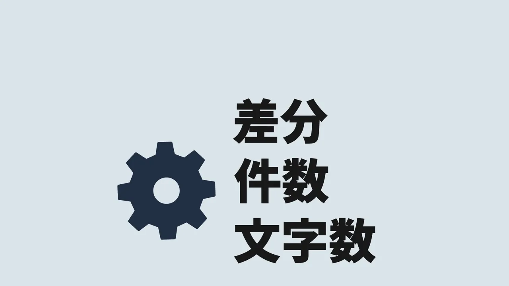

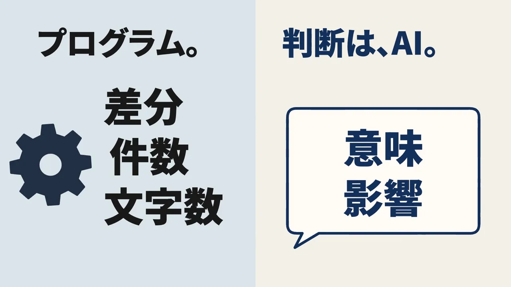
差分
件数
文字数
プログラム。
意味
影響
判断は、AI。
0.3 秒〜 差分、件数、文字数は、プログラムに任せます。
4.4 秒〜 意味と影響の判断だけを、AIに渡します。
声 42 字／画面 24 字
「プログラム。」（墨）と「判断は、AI。」（藍）。五つの語は、どちらの側に付くかで意味が決まります。
道具を、持たせる
1:23.0–1:30.8 / 7.8 秒 ・ 留保と対処

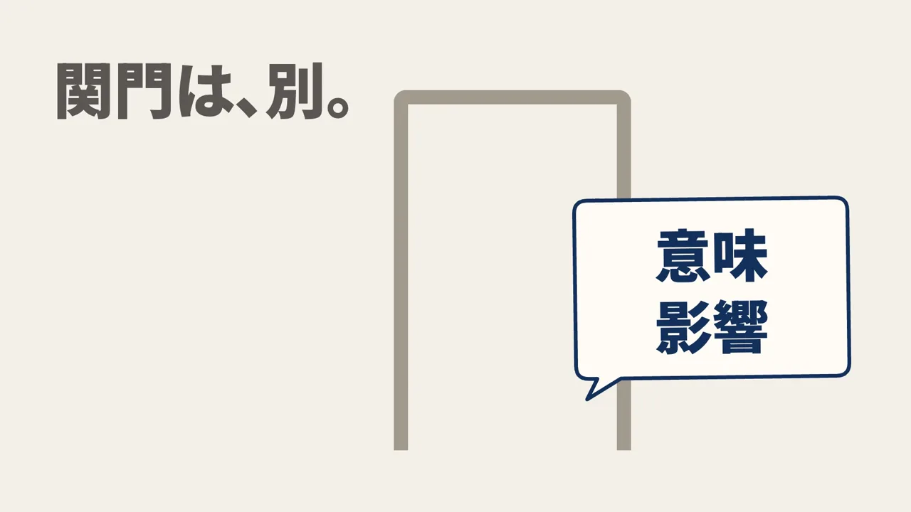

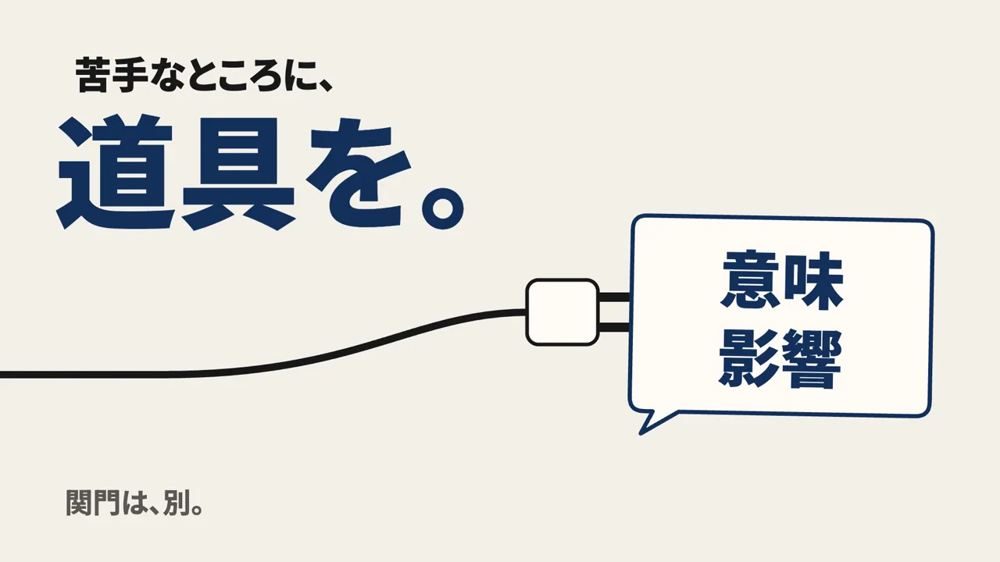
関門は、別。
意味
影響
苦手なところに、
道具を。
関門は、別。
0.3 秒〜 別のAIでの確認は、関門としては役に立ちます。
4.3 秒〜 道具は、苦手なところにだけ足します。
声 41 字／画面 28 字
「道具を。」（約 236px、藍）。関門の句は灰で、否定の見出しにはしません（通れる枠として描き、役に立つことは声が言います）。
前半は枠と、それを通る吹き出し。後半は左上の二行、中央のプラグとコード、右の吹き出し。プラグは道具で、歯車とは別の記号です。検索画面や製品のアイコンは描きません。
枠が上から降り、吹き出しがその中を左から右へ通り抜けます。枠が上へ戻ると、プラグが左から滑り込んで吹き出しの縁に付き、吹き出しが押されて揺り戻します。「道具を。」が下から 着地。
画面ごと上へ抜け、左から「急ぐのか。」が入る。
モーショングラフィックスだけです。画像・動画ファイルは使いません。
事情が、要る
1:30.8–1:39.6 / 8.8 秒 ・ 留保

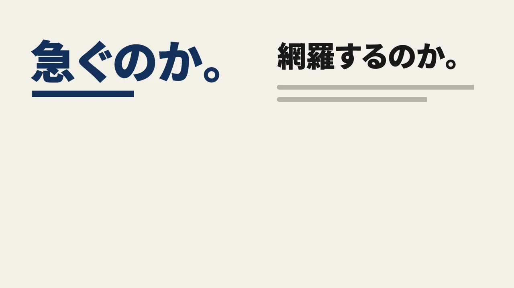

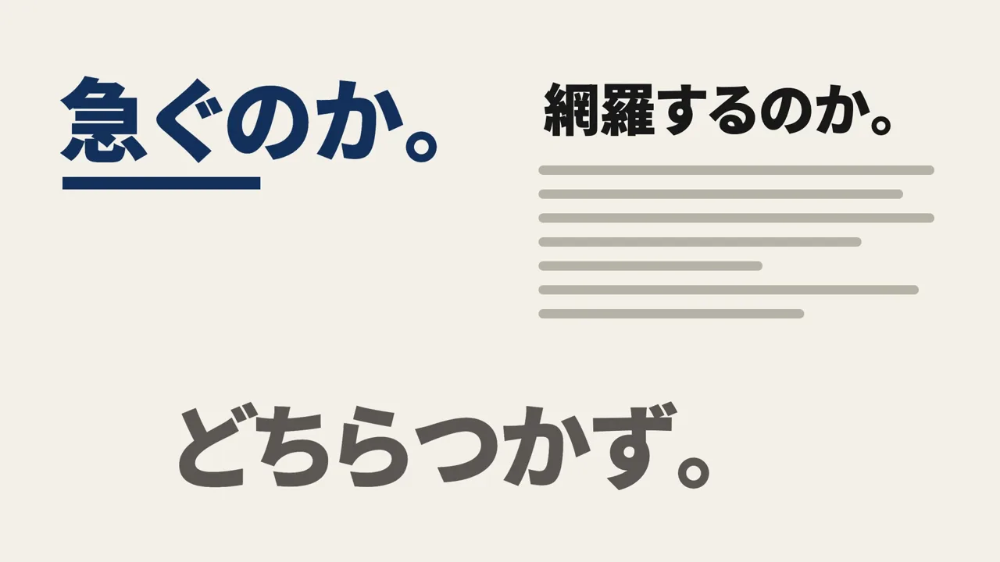
急ぐのか。
網羅するのか。
どちらつかず。
0.3 秒〜 急ぐのか、網羅するのか、
2.4 秒〜 伝えないとAIには分かりません。
5.4 秒〜 返信すべきかは、自分の事情が要ります。
声 47 字／画面 19 字
「どちらつかず。」（約 176px、灰）。何も伝えないと、短い側にも長い側にも決まらない、を語の塊の行き来で見せます。
上の左右に二つの頼み方（短い語と一本の線／長い語と七本の帯）、下の中央に灰の一語。帯は文章の長さの差で、メールの画面ではありません。
「急ぐのか。」が左から速く 着地 し、線が一本だけ伸びます。「網羅するのか。」は行のマスクから入り、帯が上から順に伸びます。「どちらつかず。」は下から入り、塊ごと左右へ行き来し続けます。
画面ごと左へ抜け、藍の大きな吹き出しがしっぽの先から出る。
モーショングラフィックスだけです。画像・動画ファイルは使いません。
任せたいのは、判断
1:39.6–1:54.5 / 14.9 秒 ・ 期待と留保

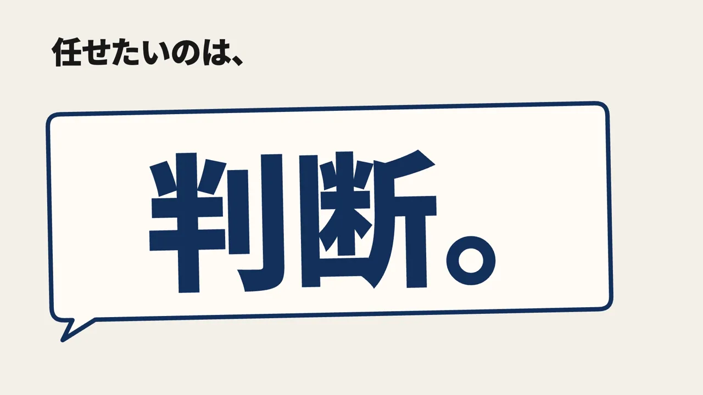

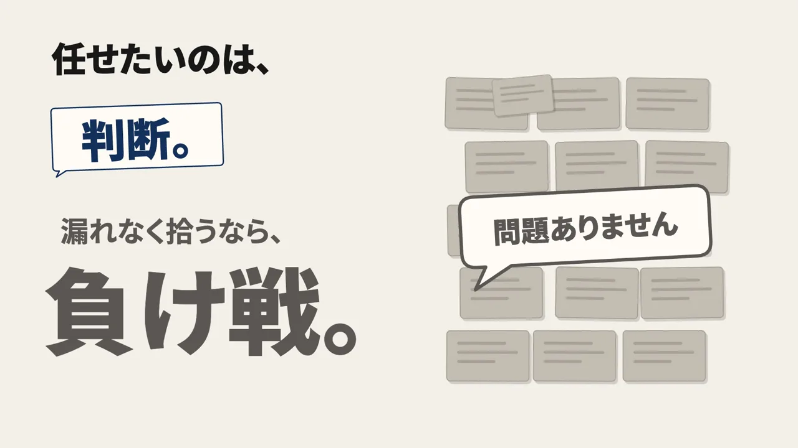
任せたいのは、
判断。
漏れなく拾うなら、
負け戦。
問題ありません
0.3 秒〜 任せたいのは、直感にしか頼めなかった判断です。
4.3 秒〜 間違えても、前には進みます。
7.6 秒〜 漏れなく拾う仕事は、AIだけだと負け戦になりやすい。
12.1 秒〜 冒頭の確認は、こちらでした。
声 77 字／画面 30 字
「判断。」（約 400px、藍の吹き出しの中）。01 の灰の「問題ありません」と同じ大きさの吹き出しで、任せたい側を藍で対にしています。留保の「負け戦。」は灰で、同じカットに残します。
前半は画面の大半を占める藍の吹き出し。後半は左に「任せたいのは、」と小さくなった吹き出し、その下に灰の二行、右に灰色カードの壁。最後に壁の上へ 01 の「問題ありません」が小さく出て、冒頭がこちら側の仕事だったことを絵でも示します。
吹き出しがしっぽの先から出て、声の「前には進みます」で二歩、右へ進みます。後半は吹き出しが左上へ縮み、灰色のカードが下の段から積もって壁になり、その前を拾われないカードが落ち続けます（漏れ）。「負け戦。」は左から 着地。
画面ごと下へ抜け、右から「渡し方を、先に。」が入る。
モーショングラフィックスだけです。画像・動画ファイルは使いません。
渡し方を、先に
1:54.5–2:04.5 / 10 秒 ・ 本人の結論

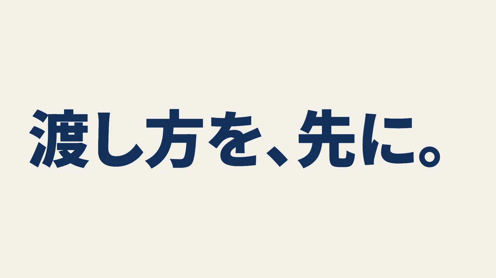

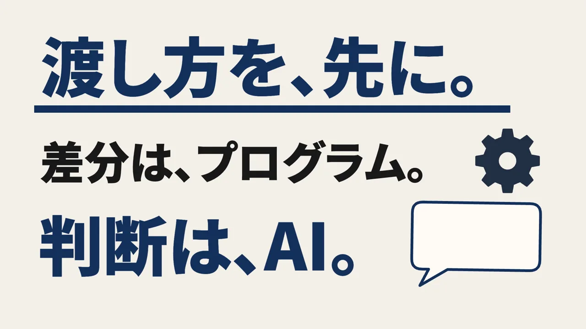
渡し方を、先に。
差分は、プログラム。
判断は、AI。
0.3 秒〜 私は、能力より先に渡し方を見ます。
3.9 秒〜 渡し方を疑ってみてください。
6.1 秒〜 同じAIでも、聞き方で結果は変わります。
声 51 字／画面 25 字
「渡し方を、先に。」（約 212px）が一行目で最大級。03 の「渡し方？」の疑問符と下線が、ここで言い切りと下線になります。呼びかけ「渡し方を疑ってみてください」は声だけで、画面には出しません。
エンドロゴ
2:04.5–2:09.8 / 5.3 秒 ・ 制作表示

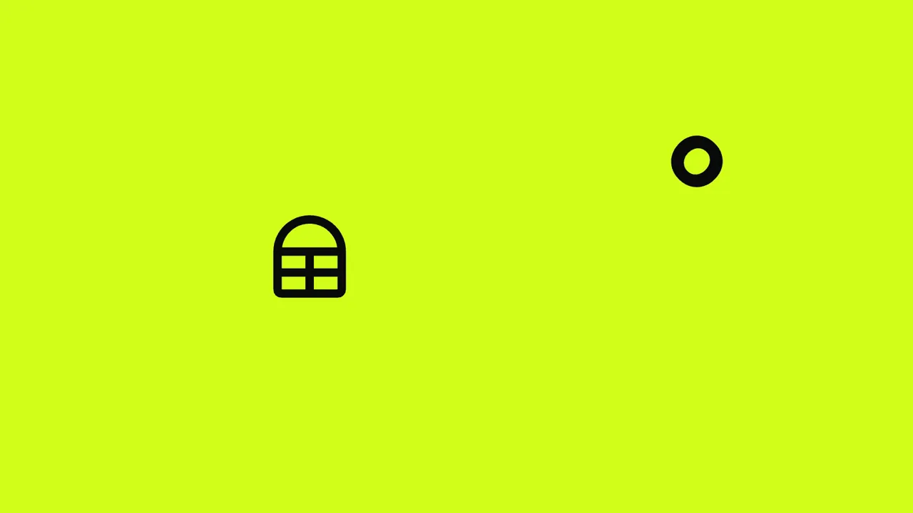

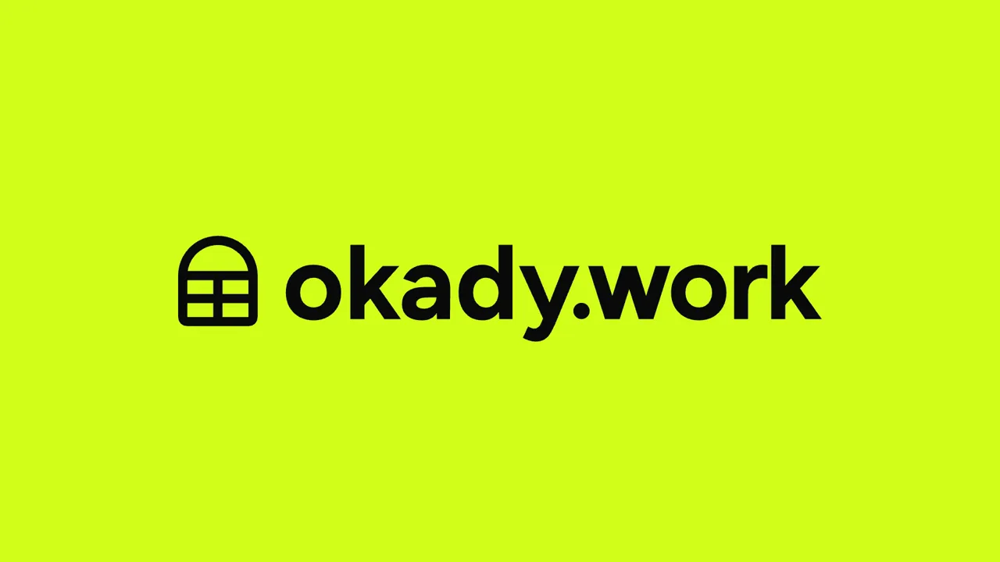
なし（ロゴのみ）
なし
assets/logo/okady-work-logo.svg（リポジトリ直下の okady-work-logo.svg と同じファイル）だけです。形・書体・色・比率は変えていません。
背景は #d2ff1a の全面。ロゴは引き伸ばさず中央（幅 1500px）に置き、本編の要素は重ねません。
SVG のタイミングを、フレーム時刻から再現しています。0–2.6 秒で o が落ちてバウンドし定位置へ、2.6–3.2 秒で全体が左へ滑り、3.0–4.0 秒で「.work」が一文字ずつ出ます。そのあと完成形を 1.3 秒保持して終わります。本編からは、画面ごと左へ押し出して入ります。
ここで終わります。エンドクレジットは足しません。
詳細（ここから下は補足）
ここまでで、どんな動画で、どう組み、どう見えるかを示しました。以下は分担、デザインと動きの参考、素材、音、根拠、完成条件です。
声・文字・素材の分担
| 担当 | 受け持つこと | 受け持たないこと |
|---|---|---|
| 声 | 経緯、研究の言い方、人でも同じかもしれないという留保、昔は手間だったこと、答えが揺れること、関門と道具の違い、事情を渡すこと、判断を任せたいこと、負け戦、本人の結び、そのあとの「渡し方を疑ってみてください」。 | 画面の語の読み上げそのもの。全文字幕。URL の読み上げ。呼びかけを画面の文字にすること。 |
| 文字 | 決め語、留保の短い句（05 の「人でも、同じかもしれない。」を含む）、吹き出しの中の語。 | ナレーションの全文。原稿にない数字。「20」という件数。「疑ってみてください」。 |
| 図（カード・光など。意匠は変更可） | 注意が薄まること、一つずつ照らすこと、プログラムとAIの仕分け、道具を足すこと。 | 説明の文。製品の画面。人の姿。 |
| 画像・動画ファイル | 使わない。紙カードの生成動画は不採用。 | 暗い机。実在のUI。人物。 |
声ありで文量と尺を組んでいます。画面に声の全文は足しません。ナレーションの有無を変えると、画面の文量と尺を組み直す必要があります。
主張・根拠・留保の対応
| 役割 | 内容 | カット |
|---|---|---|
| 主張 | 見落としは手抜きではなく渡し方である。答えが一つに決まる仕事はプログラムに、意味と影響の判断だけをAIに渡す。 | 03、09、13 |
| 根拠 | 注意力の予算は、まとめて渡すと薄くなる。長い入力の真ん中ほど見落とす、という研究がある。一つずつ渡し、問題なしはもう渡さないと、見落としようがない形になる。 | 04、05、06、07 |
| 留保 | 人でも書類の山なら同じかもしれない。昔は手間で現実的ではなかった。AIの答えは揺れる。別のAIでの確認は関門としては役に立つが、質を上げる仕組みとは別で、道具は苦手なところにだけ足す。急ぐのか網羅するのか、返信すべきかは、事情を渡さないと分からない。漏れなく拾う仕事をAIだけに任せると負け戦になりやすく、冒頭はそちらだった。 | 05 は声と画面の一行。07、08、10、11、12 は声に残し、短い句は画面にも残す |
| 最後に残す本人の結論 | 筆者は能力より先に渡し方を見る。同じAIでも、聞き方で結果は変わる。差分はプログラム、判断はAI。 | 13 |
冒頭は 01「問題ありません」、主張の核は 09「プログラム。／判断は、AI。」、結びは 13 の三行です。01 と 13 を続けて読むと、同じ主張に着きます。原稿との文言の対応は references.md にあります。
企画側／制作側
| 企画側が渡すもの | 制作側が判断・制作するもの |
|---|---|
| 主張と留保、構成・尺・文言の参考案、ナレーション案、絵コンテ 28 枚、字組みと色の参考案、動きの狙い、効果の参考（effects-direction.md）、ロゴへの参照、根拠の対応、制作依頼（fable-brief.md） | 本編の再構成、文言の整理、字組み・配色・動きの改善、技術選定、実装、検査、プレビュー書き出し。BGM・効果音は後工程 |
| 画像・動画の採用ファイルはなし。紙カードの生成動画は不採用で、生成していない | 不足する画像・動画が出たら、作らずに企画側へ返す |
| 絵コンテ上の文字について、安全域と、文字どうし・文字と図の間隔を検査済み（下記の完成条件） | 本編の機械検査。全カットを約 0.25 秒ごとに、文字の外接矩形が安全域の外へ出ていないか、図と重なっていないかを見る |
| ナレーションの原稿と、声は経緯・文字は決め語という分担 | 声の選定と生成。明示の依頼と、使える API キーがあるときだけ。この企画書は生成の許可ではない |
映像本体と、ナレーション・BGM・効果音は制作済みです。実装と再現手順は video/README.md、結果は production-report.md にあります。
Fable 5.2への依頼文
実装から検証までを任せる依頼文は fable-brief.md です。制作側の裁量は 構成と尺 にまとめています。この動画の画面と声に、制作に使うモデルの名前や性能は出しません。
デザインシステム（映像の文字・色・グリッド）
これは本編の見た目の参考案です。色の値や組み合わせは調整できます。意味の区別と十分なコントラストを維持します。この企画書のページの色（青と橙の注意色）とは別です。本編でライムは、エンドロゴの背景だけに使います。
| 名前 | 値 | 使い道 | |
|---|---|---|---|
| 紙 | #f4f1ea | 画面の地。暗い全面にはしない | |
| 墨 | #1a1a1a | 事実の語。変更が残っていた、差分、件数、文字数 | |
| 藍 | #14315c | 筆者の決め語。渡し方、予算、一つずつ、プログラム、判断 | |
| 灰 | #5c5854 | 留保と、信頼しきれない「問題ありません」 | |
| カード | #fffcf7 | 見ているファイル | |
| 見落とし | #c4beb2 | 注意が届いていないカードの面 | |
| 暖光 | #e8a830 | 注意力。円のグラデーション。文字色にはしない | |
| 変更 | #b45309 | カードの中の橙の帯。残っていた変更 | |
| 歯車 | 答えが一つに決まる仕事。一定の刻みで回る | 08 の後半、09、13 | 道具のプラグ、設定、時間 |
| 淡い青の面 | プログラムに任せる側の地 | 08 の後半、09 | 青い札、暗い面 |
| 灰の枠 | 関門（基準を満たすかを通す所） | 10 の前半だけ | 否定の印、歯車 |
| 札 | #e8eef2 | 問題なし。もう渡さない | |
| ライム | #d2ff1a | エンドロゴの背景だけ |
文字は DOM（または同等の層）で、詰め組と行のマスクが効く組み方にします。カード・光・歯車・カメラも DOM／CSS と SVG で組んでいます（three.js は使っていません。図がすべて平面で、文字と図の重なりを同じ層の外接矩形で機械検査できるため。理由は video/README.md）。カメラの寄りと移動は図の層に掛け、文字が図に埋もれたり、画面の端で欠けたりしないようにしています。本編の安全域の目安は、1920×1080 で左右 80px、上下 64px です。
字組みはカットごとに変えています。
- 01 はカードの壁と、それをおおう中央の特大の吹き出し。
- 02 は左の三行（中の一行が特大）と、右の大きな灰色カード。
- 03 は語だけ。左上が小さな灰、中央が画面幅の藍。
- 04 は左の文字の柱と、右の円とカード。特大の一語から、灰の二行へ。
- 05 は横に走る一本の列から、上の見出し・中の三段・下の留保の帯へ。
- 06 は画面いっぱいの一語から、中央の一枚だけが極端に大きい構図へ。
- 07 は左の文字の柱と、右の面 → 三枚。
- 08 は大きさの違う三つの吹き出しから、淡い青の全面と歯車へ。
- 09 は左の淡い青（歯車と縦の三語）と、右の紙色（吹き出しに二語）。
- 10 は枠と吹き出しから、語・プラグ・吹き出しの三つへ。
- 11 は上の左右の短さと長さ、下の中央で行き来する一語。
- 12 は画面の大半を占める藍の吹き出しから、左の留保と右の灰色の壁へ。
- 13 は左揃えの三行と、右の歯車・吹き出し。
- 14 はライムの中央にロゴだけ。
動きの言語
名前は狙いの共有です。本編の秒数、枚数、軌道、イージングの式は固定しません。ロゴだけは指定の動作とタイミングを再現します。読む間は、行、語の塊、カードの列、画面（カメラ）を動かします。文字の形そのものは崩しません。1 字ずつの揺れ、拍ごとの脈動、意味のない粒子では「動いている」にしません。
| 名前 | 狙い |
|---|---|
| 広げる | 一つの光の半径が伸び、不透明度が下がり、中央が穴になる。この作品の、注意が薄まる動き。 |
| 送る | カードを 1 枚ずつ扱い、その一枚へ注意が集まる。約 0.4 秒は参考値。テンポと読みやすさから決める。 |
| 寄る | カメラが図の層へ近づき、注意が一枚に集中した感覚を見せる。06 の最後の約 2 秒は参考値。読む間も構図を動かす。 |
| 仕分ける | 語が左の歯車と右の吹き出しへ分かれる。 |
| 着地 | 決め語の塊が大きく出て、水平に収まる。収まったあとも、列かカメラは動かし続ける。 |
| 流す | 読む間に、行やカードの列を、向きを変えて動かす。視線を導き、意味の変化と次の場面への勢いをつくる。 |
| 押し出す | 次のカットへ、カードか語を勢いのまま渡す。場面の境で止めない。 |
実装は Remotion 上の DOM／CSS と SVG です。位置・回転・拡縮はすべてフレーム時刻から決まり、同じコマは何度書き出しても同じ状態になります。文字はテクスチャにせず、DOM の層に置いています。カメラの名前は カメラワークと切り替えの名前 に合わせ、05–06 の寄りはドリーイン、カードを追う区間はトラッキングです。
効果の採否は effects-direction.md にあります。参考にするのは、語の塊の着地、層の速度差、吹き出しがしっぽから出る動きです。採用数や種類の上限ではなく、実際の文字と組み合わせた見え方で選びます。見本の暗い背景、章題、1 字の揺れ、白フラッシュは使いません。
記号と色
以下は参考案の記号体系です。図形の意匠は変更できますが、同じ記号の意味と質感を全カットで一貫させます。
| 記号 | 意味 | 出るカット | 混ぜないこと |
|---|---|---|---|
| 白いファイルカード | 一つのファイル。注意が届いている | 01、02、04、05、06、07、08 の前半 | 歯車、札、人 |
| 灰色のファイルカード | 注意が届いていないファイル | 01 の吹き出しの下、02、05、12 の壁と落ちるカード | 問題なしの札。暗い背景 |
| 橙の帯 | そのファイルに残っていた変更 | 01、02、04〜07 | 強調の下線、ロゴ |
| 暖色の円 | 注意力の予算が、そこにある。広げると薄い | 04、05、06、07 | 文字の色、ライム |
| 灰の縁の吹き出し | AIの発話のうち、安定しないもの、または「問題ありません」 | 01、02、08、12 の最後 | 判断を任せる側の吹き出し |
| 藍の縁の吹き出し | 意味や影響を言う、AIに渡す側 | 08 の「別の答え」、09、10、12 の「判断。」、13 | 歯車、問題ありません |
| 歯車 | 答えが一つに決まる仕事 | 09、13 | 道具のプラグ、設定、時間 |
| プラグ | 苦手なところに足す道具 | 10 だけ | 歯車、電源、特定の製品 |
| 青い札「問題なし」 | 確認が終わり、もう渡さないもの | 07 だけ | 灰色の見落としカード |
| 長さの違う帯 | 答えの深さの差 | 11 だけ | メールの画面、グラフの数値 |
| 藍の文字 | 筆者の決め語 | 03 の「渡し方？」、04、05、06、07、09、10、11 の「急ぐのか。」、12、13 | 留保、出典 |
| 灰の文字 | 留保、または信頼しきれない発話 | 01、03 の「手抜き？」、04 の「薄く／なる。」、05 の「人でも、同じかもしれない。」、08 の「揺れる。」、10 の関門、11 の「どちらつかず。」、12 の負け戦 | 決め語 |
| ライムの全面 | 制作表示 | 14 だけ | 本編の強調色 |
キャラ設定
人物は出しません。ファイルはカード、AIの発話は吹き出し、プログラムは歯車を基本に、図形の意匠は改善できます。原稿の「人でも同じかもしれない」は、該当場面の声と画面に読み取れる形で残します。
素材表現の方針
本編の素材表現はフラットなモーショングラフィックスで統一します。紙カードの生成動画・人物素材は使いません。図形の密度、奥行き、影、重なり、カメラ、文字との関係は改善できます。同じモチーフの質感を一部の場面だけ変えません。
追加の写真・動画が必要だと判断した場合は、対象場面と役割を企画側に返し、依存しない部分の実装を進めます。制作側に新規の画像・動画生成を任せる条件にはしません。
素材
| ファイル | 用途 | 区間 |
|---|---|---|
assets/storyboard/frame-01-start.webp から frame-14-end.webp までの 28 枚 | 本編から切り出したコマ（1280×720）。このページのカット表の画像 | 各カットのはじめ／おわり |
assets/storyboard/cut-01-start.webp から cut-14-end.webp までの 28 枚 | 企画時の構図ラフ。出発点の資料で、現行の構成ではない | ― |
assets/logo/okady-work-logo.svg | エンドロゴ。リポジトリ直下の okady-work-logo.svg と同じファイル。形・色・比率は変えない | 本編終了後（動作 4 秒＋保持 1.3 秒） |
assets/fonts/NotoSansJP-wght.ttf、NotoSansJP-OFL.txt | 本編の書体（Noto Sans JP の可変ウェイト。900・700・500 を使用）。SIL Open Font License 1.1 で、許諾文を同梱 | 全編 |
採用する写真・動画ファイルはありません。紙カードの生成動画は不採用で、未生成です。本編の図はすべてコードで描いたモーショングラフィックスです。
音
BGM と効果音は、次の条件でこの作品用にローカルで合成しました（video/audio/bgm.py。C 長調・150BPM、木琴風の音の 8 分の型とエレピの刻み）。ナレーションは ElevenLabs で生成済みです。過去の企画の曲は使いません。20261007 の音源も使いません。
- トーンは、注意が一点に戻るときの明快さです。暗い環境音や、失敗を責める音にはしません。
- 拍が立ち、カードの送りと画面の大きな組み替えを支えるリズムにします。150 BPM、または75 BPMの八分刻みは参考であり、テンポは固定しません。遅い曲に合わせて映像の勢いを弱めません。
- 見落としから一つずつの集中へ切り替わる場面と、プログラム・AIの役割が分かれる場面にアクセントを置き、本人の結論でまとまり、ロゴの終わりで収めます。原案のカット番号や2:05への固定はしません。映像より短い音源を、余裕があるとは書きません。
- 短い無音や音を薄くする間は、見落としに気づく瞬間など、意味の転換に使えます。位置と長さは映像に合わせ、運動感を失う長い停止にはしません。
- 効果音は、カードが集中する瞬間や役割が分かれる瞬間を支える短い音を候補にします。種類をクリックだけに固定しません。製品の通知音は使いません。本編では、カードを渡すたびの木の音、歯車の刻み、吹き出しの出る二音、語の着地の打音、場面の押し出しの風切りを入れています。
- ナレーションは、各カットの原稿案を基に意味と留保を保って整理できます。結びの最後の一文と、呼びかけを声だけにする決定は守ります。画面の全文を字幕にしません。声の生成は、明示の依頼と、使える API キーがあるときだけです。有料の音楽生成を比べる場合は、品質・時間・費用の理由を一行残して選びます。料金が未確認の有料生成はしません。
根拠
原稿の抜粋、画面文言、出典、画面にしない情報は references.md にまとめています。研究の数字は足していません。出典の名（記事・論文）は画面にも声にも出しません（2026-11-10 のユーザー指示）。出典は references.md に記録しています。論文と記事の図は転載していません。
完成条件・確認状態
- ナレーション・BGM・効果音つきの全編を制作済みです。
video/out/final.mp4（1920×1080・30fps・129.8 秒、H.264／AAC。Git 管理外で、video/README.mdの手順で再出力できます）。 - ナレーション：ElevenLabs（eleven_v4、声 Kouichi）で 13 区切り・626 字を 1 回ずつ生成しました（2026-11-10 のユーザー依頼）。ローカルの Whisper で書き起こし、原稿どおりに読めていることを文字で照合しています。尺と各カットの動きの時刻は、声の実測に合わせて決めました。
- BGM・効果音：この作品用にローカルで合成しました（C 長調・150BPM。課金なし）。BGM は声のある間 9 dB 下げ、全体を −14 LUFS 付近に合わせています。
- 文字の機械検査：全編を 0.1 秒ごと＋カットの境目（1,248 コマ）で検査し、安全域（左右 80px・上下 64px）の外にある静止した文字、文字と図の重なり、別の行の文字どうしの重なりは 0 コマでした。移動中として記録されたのは 77 コマで、内訳は production-report.md にあります。
- 確認していないこと：動画を等速で再生して見ること、音を耳で聴くことは、制作環境ではできていません。映像は連続コマの一覧と静止画、音は書き起こし・音量の数値・語の時刻で確認しています。曲の雰囲気、声の抑揚、声と BGM の聴こえ方は未確認です。
- 出典の名、章表示、テロップ帯、制作管理番号、エンドクレジット、白フラッシュ、粒子は入れていません。最後はライムの上のロゴだけです。
改善の効果を確かめる観点
制作結果を見るための項目です。制作側の記録は production-report.md にあります。
- 企画書を改善した判断が、主張の明快さ・字組み・画面全体の動き・場面間の接続にどう表れたか。実装とプレビュー、文字の検査まで到達したか。
- 人の手戻しが何回あったか。仕様の聞き直しと、検査で戻した回数を分ける。
- AGENTS.md と、依頼文が指定した過去の feedback の指摘を、指摘される前に守れたか。映像の中の管理番号、字の揺れ、暗い画面、白フラッシュ、章表示、長い静止。
- 自己検査で見つけて直した件数と、直したあとに同じ検査を通したか。
- 進捗ログの開始と完了。暦の日数の見積もりは使いません。
- 等速の通しと BGM の試聴を、見ていないのに見たことにしていないか。
- 報告に、実際に確認できた実行環境と、再生・検査の証拠があるか。モデルの性能値や作業量を映像の品質の代わりにしていないか。
- 残作業の一覧で止まらず、完成条件まで進んだか。